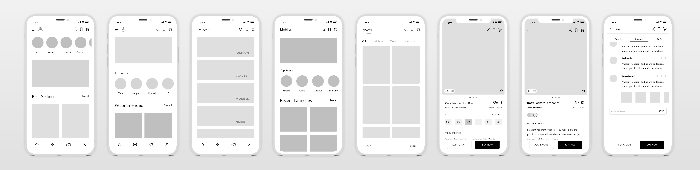

I felt the Amazon app needed a massive update!
OVERVIEW
The main reason for me to take up this project was to get a practical insight into the UX design process by redesigning a familiar app, which has a poor interface and UX. Amazon app being widely used worldwide, seemed to be the perfect choice serving this purpose. The goal of this project was to identify common usability and accessibilty issues in the app and therefore provide an enjoyable, clutter-free shopping experience even for a first- time user. The expected outcome was a cleaner, minimal, user-friendly interface for the e-commerce app, Amazon.
The Process
At the beginning, it was mandatory for me to plan out the different steps to undertake, keeping in mind the Design thinking principles. The entire process was broadly split into two different stages.
- Current Design Analysis- Inspecting the current app for usabilty issues and elaborate User research
- Unsolicited Redesign-Suggestions for a better User Experience through a more intuitive User Interface
Evaluating the Interface
In this stage, I evaluated the Amazon app screens using the following three methods.
Informal Action Analysis
As apart of this evaluation, I played the role of an user who may or maynot be familiar with the app, in order to empathize with the first-time users as well . I enlisted all steps right from downloading till confirming an order. Following were my findings:
- Opening the app for the first time leads you to the signing in screen, however there's an option to skip it all together. Also, an option to create an account.
- Amidst so much clutter, it is difficult to learn about the categories of products available.
- The search option is unreliable and doesn't relate to product categories for easy searching.
- Filter options are clumsy, unorganised and not user-friendly. Many important and product-relevant filter options to aid in a better shopping experience could have been added.
- While checking out a product, one can't find the "Buy Now" or "Add to cart" options right on the screen. One needs to scroll down and find the buttons.
- Payment and address options are also poorly organised.
- Instead of "Swipe to place order", a button to "confirm order" is better.
- Users should have freedom to cancel ordering go back in case they proceeded to place an order by mistake.
Cognitive Walkthrough
As a customary walkthrough procedure, for each of the major screens in the amazon app, the following 4 questions were asked-
- Will the user try and achieve the right outcome?
- Will the user notice that the correct action is available to them?
- Will the user associate the correct action with the outcome they expect to achieve?
- If the correct action is performed; will the user see that progress is being made towards their intended outcome?
At the end of this, I was able to pin-point numerous areas where Amazon app did fail.
Heuristic Evaluation
Heuristics are broad rules of thumb. These qualitative guidelines laid down by Jacob Nielsen prove to be very efficient means of testing the usability of a website or an app.
At the end of this evaluation, I found at that the Amazon app was unable to meet most of the guidelines multiple times across its interface.

User Research
This is the most crucial step in the UX process. At the end of this, I expected to learn about the different groups of users, the goals they want to achieve through the app and also, to empathize with their pain points. It is impossible to learn about users without interacting with them, talking or meeting them. So, I carried out this process in four different phases.
Online Surveys-
In order to gather preliminary quantitative and qualitative data, it was important to gather as much data as possible. This couldn't be possible by meeting people individually. Therefore, I carried out an online survey using Google Forms and forwarded it via mail and WhatsApp to a varied group of (50) users belonging to different walks of life. This helped me gather insights into:
- The demographics of users(age, gender, occupation
- Frequency of shopping online
- Other shopping apps used and their favourite(if any)
- Category of products usually purchased
- Problems faced by them using Amazon app
- Whether they rely on reviews on the app or research about the product elsewhere
- Whether users wanted an update in the app interface
Interviews-
Apart from focussed preliminary data obtained via surveys, it was also important to interview few users, to collect elaborate data regarding the app. The five selected users were chosen such that they were well acquainted with the app and/or frequent users. They however belonged to different walks of life and different age groups.
Observation-
This was also important in order to learn about the users, as it helps to unfathom data which the users may not be able to vocalize or express. In this process, users were observed while they actually used the app and notes were made. For each of these following methods, a frequent user and a first-time user was asked to use the app.
- Users were observed as they aimlessly browsed the app and carried out any task they like, for example, wishlisting an item, searching for a specific product or buying a product. As they did so, I made notes about what they were saying or doing all the way and also added comments about their expressions and frustrations.
- Users were given a specific task to carry out and the time taken to carry out the task(if they could) was noted down. Next they were also interviewed to learn about their pain points and feedback about the app.
Real Use Data
In order to get an unbiased data regarding the actual use of the app worldwide, I also made a bit of research on the web. I collected various statistics and trends from various resources to aid me in the further UX process. Some findings:
- App users account for approximately 42% of Amazon’s smartphone visits, while visits to Amazon.com make up the other 58%
- App users take almost 85% of the mobile time spent with Amazon.
- Amazon's app users spent 12.8 billion minutes per month in the Amazon app in 2018, on average, giving the firm far more opportunities to make sales than mobile browser users, who averaged 2.4 billion minutes on the site.
- Amazon had over 162 million unique mobile browser visitors in December 2018 to the app’s 122 million.
-Business Insider, Mobile app users are key to Amazon's Success
Analysing Data from User Research
In order to analyse the data obtained from my findings by evaluating the app interfaces and the data obtained by surveying, interviewing and observing users, I used the methods of card sorting and creating User Personas to learn about an average user's goals and pain points. Also, in this step I had to prioritise issues according to user feedback, in order to narrow down the scope of work, because taking care of all grievances of users seemed impossible. Following were some important findings:
- Too much clutter results in poor navigation.
- Unnecessary and least-used features(like camera feature) make the interface crowded
- Unecessary app screens(like Login/Create an Account) waste user's time and make the interface confusing
- No theme is maintained in the interface design- Too many colours appear distracting
- The interface design should be classy, clean and minimal.
- Common and frequently-used features aren't given importance, like the Categories of Products on the first screen or the Buy Now option while checking out.
- Filter menu should have more relevant options like Price Range, Brand and some related to individual product specifications
- Layout of payment and address options can also be improved
- There should be provision for guest-checkout, allowing a first-time user to place an order by simply entering his address without creating an account.
- There should be an option to confirm/cancel order before finally placing order, to check all details regarding the order at one place.
Low Fidelity Prototyping
I began with sketching some of the screens, which needed to be changed. Then I proceeded to wireframing them, before jumping to high-fidelity prototyping. There were four major points I kept in mind from this stage onwards:
- To make the UI minimal
- To ensure that the look and feel is consistent throughout the app
- To simplify the checkout process
- To simplify the product search process- Avoid clutter
Wireframing
At the end of this stage, the layout was almost finalised after obtaining feedback from users of the app. The UI was monochrome, images were avoided and real icons(monochrome) were used. Check some of the wireframes below.
